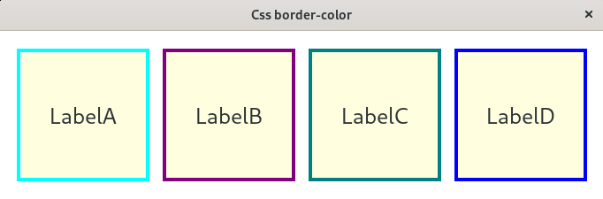
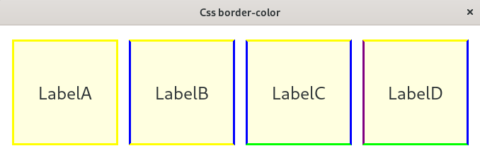

(update:2025/7/25)
border-colorプロパティは、ウイジットの枠線の色を指定するためのプロパティです。
例．yellow, aqua, lime
例．#C0C0C0(silver), #800080(purple), #ff8c00(drakorange)
例．rgb(128, 128, 0) olive, rgb(0, 128, 128) teal, rgb(255,255,255) white
例．hsl(0, 100%, 50%) 赤, hsl(120, 100%, 50%) 緑, hsl(240, 100%, 50%) 青

ひとつの色を指定すると、上下左右すべての枠線(border)に同じ色が適用されます。
例．border-color: yellow;
ふたつの色を指定すると、最初の色が上下に、次の色が左右に適用されます。
例．border-color: yellow blue;
三っつの色を指定すると、最初の色が上、二番目の色が左右に、三番目の色が下に適用されます。
例．border-color: yellow blue lime;
四つの色を指定すると、上・右・下・左の順に指定されます。
例．border-color: yellow blue lime purple;
そのほか、border-top-color, border-right-color, border-bottom-color, border-left-colorのように、上下左右の枠線の色を個別に指定することも可能です。

#include <gtkmm.h>
#include <iostream>
#include <gtkmm/cssprovider.h>
class MyWindow : public Gtk::Window
{
public:
MyWindow();
virtual ~MyWindow() = default;
private:
Gtk::Label m_label1, m_label2, m_label3, m_label4;
protected:
// signal handler:
static void on_parsing_error( const Glib::RefPtr<const Gtk::CssSection>& sec, const Glib::Error& err );
// child widgets:
Gtk::Box m_box;
Glib::RefPtr<Gtk::CssProvider> m_refCssProvider;
};
MyWindow::MyWindow()
{
set_title( "Css border-color" );
set_child( m_box );
m_box.set_spacing( 15 );
m_box.set_name( "m-box" );
m_label1.set_size_request( 150, 150 );
m_label1.set_text( "LabelA" );
m_label1.set_name( "m-label_A" );
m_box.append( m_label1 );
m_label2.set_size_request( 150, 150 );
m_label2.set_text( "LabelB" );
m_label2.set_name( "m-label_B" );
m_box.append( m_label2 );
m_label3.set_size_request( 150, 150 );
m_label3.set_text( "LabelC" );
m_label3.set_name( "m-label_C" );
m_box.append( m_label3 );
m_label4.set_size_request( 150, 150 );
m_label4.set_text( "LabelD" );
m_label4.set_name( "m-label_D" );
m_box.append( m_label4 );
// Load extra CSS file
m_refCssProvider = Gtk::CssProvider::create();
Gtk::StyleContext::add_provider_for_display( get_display(), m_refCssProvider,
GTK_STYLE_PROVIDER_PRIORITY_APPLICATION );
m_refCssProvider->signal_parsing_error().connect(
[]( const Glib::RefPtr<const Gtk::CssSection>& sec, const Glib::Error& err )
{ on_parsing_error( sec, err ); }
);
m_refCssProvider->load_from_path( "style.css" );
}
void MyWindow::on_parsing_error( const Glib::RefPtr<const Gtk::CssSection>& sec, const Glib::Error& err )
{
Gtk::CssLocation s_location, e_location;
std::cerr << "on_parsing_error(): " << err.what() << std::endl;
if ( sec ) {
Glib::RefPtr<const Gio::File> file = sec->get_file();
if ( file ) {
std::cerr << " URI = " << file->get_uri() << std::endl;
}
s_location = sec->get_start_location();
e_location = sec->get_end_location();
std::cerr << " start : " << s_location.get_lines()+1
<< ", end : " << e_location.get_lines()+1 << std::endl;
std::cerr << " s_pos : " << s_location.get_line_chars()
<< ", e_pos : " << e_location.get_line_chars() << std::endl;
}
}
int main( int argc, char* argv[] )
{
auto app = Gtk::Application::create( "gtkmm4.example" );
return app->make_window_and_run<MyWindow>( argc, argv );
}
window {
background-color: white;
}
#m-box {
background-color: white;
margin: 10px;
padding: 10px;
}
#m-label_A {
background-color: LightYellow;
font-size: 25px;
border-style: solid;
border-width: 4px;
border-color: aqua;
}
#m-label_B {
background-color: LightYellow;
font-size: 25px;
border-style: solid;
border-width: 4px;
border-color: #800080;
}
#m-label_C {
background-color: LightGreen;
font-size: 25px;
border-style: solid;
border-width: 4px;
border-color: rgb(0, 128, 128);
}
#m-label_D {
background-color: LightGreen;
font-size: 25px;
border-style: solid;
border-width: 4px;
border-color: Grey;
border-radius: hsl(240, 100%, 50% );
}
window {
background-color: white;
}
#m-box {
background-color: white;
margin: 10px;
padding: 10px;
}
#m-label_A {
background-color: LightYellow;
font-size: 25px;
border-style: solid;
border-width: 4px;
border-color: yellow;
}
#m-label_B {
background-color: LightYellow;
font-size: 25px;
border-style: solid;
border-width: 4px;
border-color: yellow blue;
}
#m-label_C {
background-color: LightGreen;
font-size: 25px;
border-style: solid;
border-width: 4px;
border-color: yellow blue lime;
}
#m-label_D {
background-color: LightGreen;
font-size: 25px;
border-style: solid;
border-width: 4px;
border-color: Grey;
border-radius: yellow blue lime purple;
}